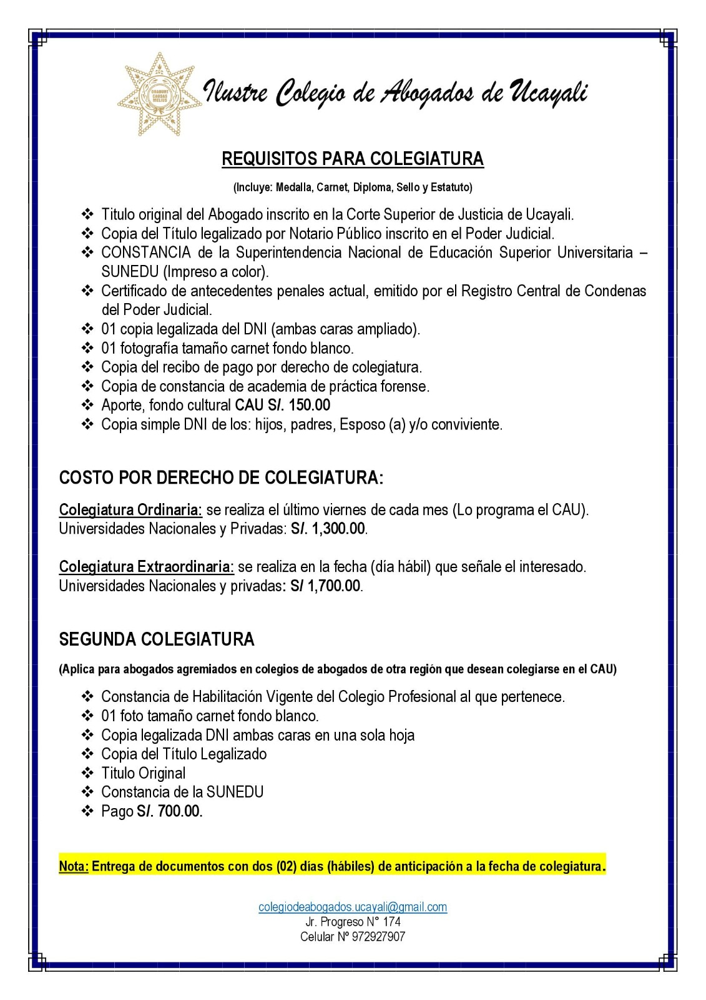

Requisitos para colegiarse
Documentos, modalidades y costos publicados para incorporarse al Colegio de Abogados de Ucayali.
La colegiatura incluye medalla, carné, diploma, sello y estatuto. Confirme montos y fechas con Secretaría antes de efectuar pagos.
Documentos requeridos
- Título original de abogado inscrito en la Corte Superior de Justicia de Ucayali.
- Copia del título legalizada por notario público e inscrita en el Poder Judicial.
- Constancia de SUNEDU impresa a color.
- Certificado vigente de antecedentes penales emitido por el Registro Central de Condenas del Poder Judicial.
- Una copia legalizada del DNI, con ambas caras ampliadas.
- Una fotografía tamaño carné con fondo blanco.
- Copia del recibo de pago por derecho de colegiatura.
- Copia de la constancia de academia de práctica forense.
- Aporte al fondo cultural CAU: S/ 150.00.
- Copia simple del DNI de hijos, padres, esposo, esposa o conviviente.
Costos y modalidades
Colegiatura ordinaria
Se realiza el último viernes de cada mes, según programación del CAU.
S/ 1,300.00Colegiatura extraordinaria
Se realiza en la fecha hábil indicada por la persona interesada.
S/ 1,700.00Segunda colegiatura
Aplica para abogados agremiados en colegios de otra región que desean colegiarse en el CAU.
- Constancia vigente de habilitación del colegio profesional de origen.
- Una fotografía tamaño carné con fondo blanco.
- Copia legalizada del DNI, ambas caras en una sola hoja.
- Copia legalizada del título y título original.
- Constancia de SUNEDU.
- Pago de S/ 700.00.
Importante: entregue los documentos con dos días hábiles de anticipación a la fecha de colegiatura.
Ver publicación original
